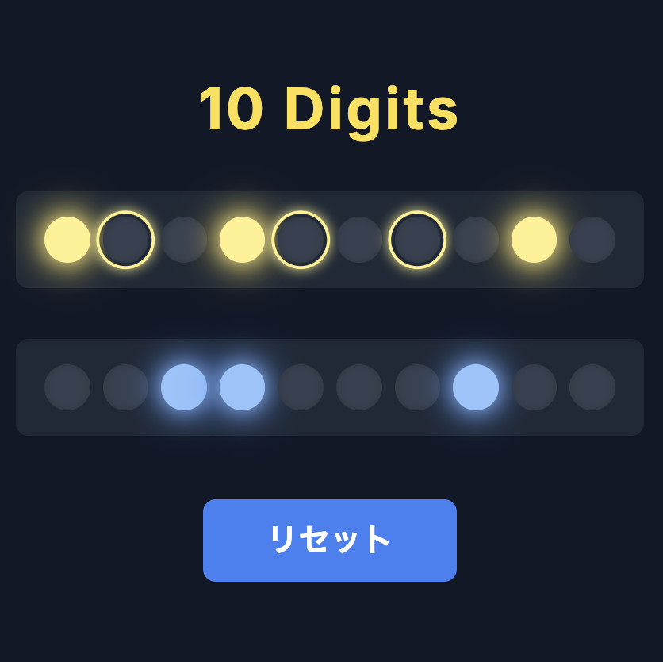

問題 21 ヒント
ヒント 1
２列ありますが、下の段がスイッチです。３個光らせると、「判定」が押せるようになります。
Q．どうなればクリアでしょうか？
ヒント 2
「判定」を押すと上のランプが光ります。３つのランプに枠があるので、ここを光らせるとクリアになりそうです。
光るスイッチを１個ずらすだけでもランプが光る場所は大きく変わります。手がかりが少なく難しいですが、少しヒントになりそうな挙動を一つ紹介します。
一番右のスイッチとどれか２つを光らせたときと、一番右のスイッチを左に1つずらしたとき、ランプの変わり方に特徴があります。
ヒント 3
図の２つの比較がわかりやすいです。

一番右のスイッチを1つ左にずらすと、ランプの1つが1つ左に移動します。
右から2番目のランプをさらに1つ左にずらすと、ランプはいくつ左に移動するでしょうか？
ヒント 4
算数を使います。
ランプの数が１０個であることはとても重要です。
ヒント 5
上のランプは、「9」から「0」の10個の数字に対応しています。光らせるべきは「8」「5」「3」のランプです。
下のスイッチは少し違う意味を持ちます。光っているのを1、光っていないのを0と表現することにすると、1000100010みたいな表現ができますね。
解けない方は、下の解答をご覧ください。
解答を見たい方はこちら↓
解答を見る